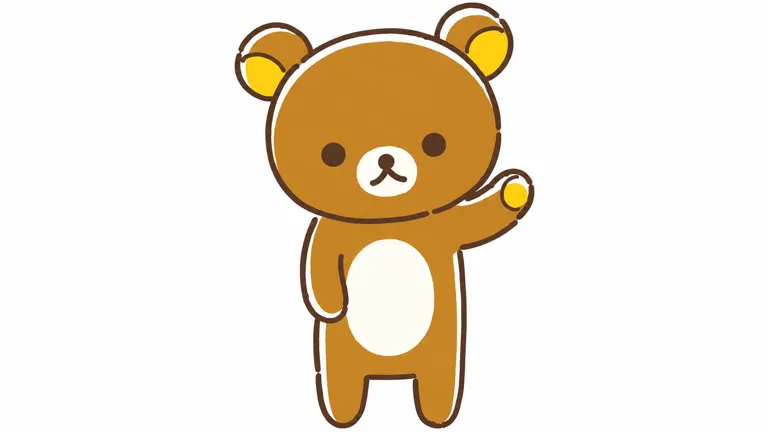

V04额部完整色块，透明画布尺寸照实记录
V04 [1280, 720] @ [620, 170]STANDARD STUDY · 2026-10-29
轻松熊 Rilakkuma
让休息有一个看得见的形状。
松弛表达靠少五官、身体姿态和日常文字延续，配角关系、季节主题与新载体支持更新；不等于每次上新都有销量增长。
查看真实平面测试 ↗
01 / 对象、权属与起源
- owner
- creator
- コンドウアキ／Aki Kondo（近藤亚希）
- operator
- San-X Co., Ltd.／サンエックス株式会社
- relation
- 原案与早期商品设计由作者履历确认；现有角色由San-X版权署名与经营。公司不是Sanrio，动画制作/发行方也不是角色母体权利人。后续各设计者分工null。
- origin
- path
- 产品先行
- year
- 2003
- story
- 官方将登场定为2003年9月；早期角色杂货/文具先行，2004纸书为后续表达载体，不将其说成IP原著起点。网上2月先行说法的旧页面本轮404，暂不采。
02 / 时间线
| 时间 | 事件 | 证据类型 | 来源ID |
|---|---|---|---|
| 2003-09 | 官方角色登场 | fact |
|
| 2004-04 | 纸书零售书目；精确首售日尚不统一 | fact |
|
| 2016-07-16 | MR75101该店开售，不是全IP最早毛绒 | fact |
|
| 2022-11 | BASIC系列首弹，2026新闻稿回顾 | self_report |
|
| 2026-04-04 | 新的TV动画TBS计划首播 | self_report |
|
| 2026-04下旬 | 黑白BASIC产品顺次上市，地区店铺或不同 | self_report |
|
03 / 表达、用户与时代窗口
- expression
- line
- 今天也可以慢一点，不必时时刻刻证明自己。
- sentence_type
- 允许
- basis
- inferred
- core
- personality
- 爱食物与休息、随自己步调；带一点神秘的着布偶服身份
- emotion
- 内收
- action
- 躺、坐、吃零食；与顽皮白熊、勤劳黄鸟形成生活反差
- basis
- official
- insight
- scene
- 忙完片刻、翻一页短句、触碰桌边毛绒
- behavior
- 看动作与文字，选择适合自己生活的主题/尺寸
- state
- 想获得短暂休息的许可，不必先完成宏大叙事
- conflict
- 表达是放松，收藏抢购/预算和收纳却可能带来压力
- unsaid
- 陪我停一会儿，就够了。
- basis
- inferred
- circle
- who
- 角色文具/毛绒收藏者、读者与家庭受众；人口占比未知
- where
- 日常杂货、官方/授权店、书与动画接触
- buy
- 少数老书评自述从文字入坑与买整套；不能回推当前转化率
- signs
- 圆耳、点眼、白口部/腹斑、黄耳内/脚掌、松弛姿态；同伴不是别名
- share
- 按主题收藏、短句分享与生活拍照；本轮用户照片未作逐图分析
- breakout
- 书和动画可补充情绪语境，新客贡献null
- pendulum
- position
- 软萌治愈
- against
- 休息许可与高绩效日常形成张力；2003起点早于近年中文“躺平”，不倒推创作者当年用词
- 组织
- San-X原创角色经营；本人作者原案与公司版权、后续动画制作须分开。
- 窗口
- 2003先于近年躺平标签；长期经营表现为不同年代仍有产品/内容供给，而非已证实连续商业增长。
04 / 实际看图：身份、变体与载体
以下逐图观察只限实际可见角度。图像URL日期不作作品创作日期，产品照片不作标准三视图。
暖棕扁圆头、点眼、白口部/白腹，黄耳内脚掌，斜倚坐姿、双臂在腹前。
已实际打开原图；V01—03是官网200×200档案图，V04是动画正式角色图，V05仅用于跨载体对照。
[s1]
奶白身体、粉耳内、胸前红按钮，口微张；是Korilakkuma，不是本体白色涂装。
已实际打开原图；V01—03是官网200×200档案图，V04是动画正式角色图，V05仅用于跨载体对照。
[s1]
更深棕、胸前毛束、耳较深，坐姿脚有黄斑；官网明列真熊，与着布偶服主角不同。
已实际打开原图；V01—03是官网200×200档案图，V04是动画正式角色图，V05仅用于跨载体对照。
[s1]
暖棕身体、奶白口部/腹、黄耳内/右掌，右臂朝斜上；深棕线不完全闭合，边缘奶白留缝。
已实际打开原图；V01—03是官网200×200档案图，V04是动画正式角色图，V05仅用于跨载体对照。
[s5]
四成员实物黑白/灰配色，主角黑身白腹、灰耳内/眼，背拉链内圆点布也黑白；文字与多图是官方商品说明，不是母版。
已实际打开原图；V01—03是官网200×200档案图，V04是动画正式角色图，V05仅用于跨载体对照。
[s7]- 外形五轴与头脸
- archetype
- 动物类人
- silhouette
- 大头小身
- mark_position
- 五官
- 姿态
- mark
- 圆耳扁圆头、点眼、奶白小口部及人字嘴、白腹、短肢与懒散重心
- face
- V01点眼在脸中下位置、奶白口部内小鼻与两分嘴，无高光睫毛；V04轮廓留白为动画笔触
- emotion
- 面无表情
- odd
- 看似普通棕熊，却是中身保密的着ぐるみ；背拉链与水玉布是内容细节
- density
- 极简
- naming
- 其他
- group
- 角色群
- 识别组合撞车边界
- 棕熊公共原型不等于可以搬用圆耳点眼、人字嘴白口部、椭圆白腹、黄掌和背拉链整套。研究松弛重心时应建立独立比例与脸。
- 跨图不变量与变量
- recurring
- 扁圆头小点眼、白口部与分叉嘴、软圆短肢和日常节奏。
- variables
- 主色、笔触、姿态、衣装与毛绒触感；同伴各有身份。
- unverified
- 全历史轮廓比例、每款背部是否可开。
05 / 色彩与材料
- mode
- 白底加签名色
- main
- 经典暖棕、奶白、黄；黑白BASIC是官方反例
- signature
- 口部/腹与身体大面积分区、少量掌耳强调；色可变而关系延续
- notes
- 黑色不是图像变暗：V05官方实物黑白设计；摄影灰影不作固有色。小白熊的红钮和真实小熊胸毛不加给本体
V04右耳内
V04 [1280, 720] @ [803, 100]V01头侧，200×200小图压缩近似
V01 [200, 200] @ [102, 62]色值为原始图像取样的屏幕近似；背景、主角与材料分开，不是官方色卡。
不同产品有短绒、长绒、弹性软材、刺绣和绗缝棉布；具体纤维配方依SKU，不能把所有毛绒都称一种面料。V05有真实拉链细节，未据此认定所有版本都有可打开拉链。06 / 代表产品与内容载体
| SKU/载体 | 发售/出版 | 价格·币种·地区 | 尺寸 | 材料/工艺 | 边界 | 来源ID |
|---|---|---|---|---|---|---|
| MR75101普通S毛绒 | 该零售商2016-07-16开售 | 日本停售时JPY1650含税 | 未知 / null | 未知 / null | 非官方首售日；停售不是IP退市 |
|
| Monochrome主角毛绒 | 2026-04下旬顺次 | 日本JPY2970含税 | 未知 / null | 毛绒，细配方null；背拉链内水玉布 | 具体SKU页受阻，不从伙伴尺寸补本体 |
|
| Monochrome俯卧软毛绒 | 2026-04下旬顺次 | 日本JPY5830含税 | 未知 / null | 官方称もーちもち素材；成分null | 俯卧抱持载体，非普通款同比缩放 |
|
| Monochrome记事本 | 2026-04下旬顺次 | 日本JPY385含税/本 | 80张/4种内页；外尺寸null | 包背装订、烫箔封面 | 日常使用入口不等于盲抽 |
|
| ぬいぬい包装熊 | 店2025-12-06/网2025-12-08 | 日本JPY4180含税 | 未知 / null | 未知 / null | Loft及官方网店限定；普通ぬいぬい毛绒3850不同SKU |
|
| 纸书《リラックマ生活》9784391129328 | 2004-04书目/精确日null | 日本访问价JPY880含税 | A5/124p（书店信息） | 纸 | コンドウアキ图文/主妇与生活社；不同来源页数/日期有差异，未实物核版 |
|
- primary
- 授权图案
- secondary
- 实物潮玩
07 / 用户证据、商业数字与反证
- source
- s10
- account
- 1997 !!!／购买者さん
- read_scope
- Rakuten本书页面当前可见3条评论全文，2006/2009/2010
- finding
- 有人因短句入坑或买整套，也有对对象适用性的保留；不用原话替用户贴标签。
- boundary
- 旧书自选评论，不能当今日潮玩消费者比例。
- source
- s12
- account
- みゃーこ、YUKA、紅香、佳音、ぽてちゅう
- read_scope
- 纪伊国屋转引5条评论，2013—2023；原读书Meter未另开
- finding
- 温柔的日常文字和松弛感，拉链/内部身份也令一位读者有些不安。
- boundary
- 相同原评论不得跨站重复计数；无订单核验。
- source
- u1/u2/u3
- account
- 未知 / null
- read_scope
- 3条搜索摘要；原页均受阻
- finding
- 预算、收纳、怕脏与高价后悔是反证线索。
- boundary
- 仅低强度线索，不作事实比例。
| 指标 | 数值 | 单位 | 期间/主体 | 证据 | 来源ID |
|---|---|---|---|---|---|
| 本IP独立营收/净销量/年度增长 | 未知 / null | 未知 / null | 截至2026-10-29 | hypothesis |
|
| 2023周年 | 20 | 年 | 从2003登场计，非销量指标 | self_report |
|
- 反例与替代解释
- 休息表达不等于赞同完全不行动：早期3星书评对读者对象有保留；该价值判断不是研究者结论。有人被拉链的未知内部吓到一点，也有人爱其文字。黑白版证明棕色并非所有官方版本不变量。高价/怕脏和占位摘要提示收藏压力，但未核系统退坑或全市场衰落。
- 用户理论检查
- shell
- 极简五官需精确比例与体块，不等于只画点眼就是同种机制
- core
- 慢下来仍能与他人一起生活；不是所有成员都懒
- shadow
- 不要把小白熊、黄鸟与真小熊当本体不同译名
- two_layers
- surface
- 短暂停顿和可触陪伴
- deep
- 日常文字、主题偏好、版本细节及收藏约束
- validation
- 周年、投票与零售在库均非净销量；未移用San-X全公司或其他IP营收
08 / 机制：证据支持到哪一步
把休息写成姿态与短句，让用户低成本进入情绪。
- claim
- 把休息写成姿态与短句，让用户低成本进入情绪。
- type
- inference
- evidence
- 角色设定专注食物和休息；读者样本被文字而非只有造型吸引。
- boundary
- 内容与少量回忆证据中等；没有情绪疗效或转化实验。
保持身份关系，允许颜色、笔触和材料随使用场景更新。
- claim
- 保持身份关系，允许颜色、笔触和材料随使用场景更新。
- type
- inference
- evidence
- 经典色、2026动画留白轮廓与黑白毛绒并列；BASIC官方说明适应服饰/室内使用。
- boundary
- 视觉与官方产品策略强，无法证明每次改色都有盈利或人人认可。
配角不同性格和季节题材可延长内容供给，但收藏成本形成反作用。
- claim
- 配角不同性格和季节题材可延长内容供给，但收藏成本形成反作用。
- type
- inference
- evidence
- 勤劳黄鸟/顽皮白熊对比与ぬいぬい主题更新；弱用户摘要提预算和空间压力。
- boundary
- 群像和供给可核，收藏负担只有非代表性片段，不能定量退坑。
- 给lab/form/studio的有边界启发
- lab
- 将情绪许可写成具体生活时刻，观察用户是放松还是被说教。
- form
- 用重心/关节/眼位形成节奏，独立设计脸部与轮廓，少靠情绪标签。
- studio
- 按触摸、使用、陈列分别验证材料与可清洁性，允许主题变化但记录身份不变量。
09 / 真实平面提示词测试
以下为可见作品的研究重建，不是原作者提示词，也不证明原作由AI制作。附图、纯文字和语言结论严格分开。
英文附图v1在V04的2026TV动画挥手角度接近，保持头脸、黄掌、白腹和动作。线更均匀且略粗、细微色阶和曲线不同；纯文字/中文/跨次稳定性未测，不代表经典版所有姿态已测。
rk-flat-ref-v1 · ready（限定范围）

- language
- en
- input_mode
- reference_assisted
- target_scope
- V04正式2026TV动画角色图的正侧前站立挥手可见角度
- observations
- 圆头耳、点眼、白口部、分叉嘴、白腹与挥手黄掌接近。线更匀/略粗、头脸和肢体曲线稍异、浅色阶与纸感残留；限定二维身份与动作通过，非标准矢量母版。
Reconstruct the single brown bear-costume character in the attached reference as a flat two-dimensional full-body character illustration on a plain white landscape canvas. Match the exact front three-quarter standing pose: the arm on the viewer's right is lifted diagonally in a small wave showing a yellow oval palm, the other arm hangs beside the cream belly, and two short legs stand apart. Preserve the wide rounded head with small round ears, yellow ear interiors, slightly off-level widely spaced dark-brown dot eyes, cream circular muzzle with tiny dark-brown nose and two downward-curving mouth branches, warm ochre-brown body, large tall cream oval belly, short round limbs and the original head-to-body proportions. Keep the asymmetry and tilted head from the reference; do not replace the dot eyes with shiny pupils, add a smile or make the face realistically bear-like. Preserve the sketch-like dark brown contour and the narrow cream edge gaps visible on the head, left arm, right hand and left body edge. Use flat solid fills and a gently imperfect line. No gradients, fur, plastic shine, clothing, red button, chest tuft, new props, extra limbs, lettering, logo, watermark or background scene. Show only the supplied visible view, not an invented back view.下载原文
全部测试记录（含未通过版本）
rk-flat-ref-v1 / ready
- prompt_id
- rk-flat-ref-v1
- subject_id
- rilakkuma
- version
- 1
- target_scope
- V04正式2026TV动画角色图的正侧前站立挥手可见角度
- carrier
- flat
- language
- en
- input_mode
- reference_assisted
- reference_image_ids
- V04
- generated_image_path
- assets/flat-ref-v1.webp
- prompt_file
- prompts/flat-ref-v1.txt
- status
- ready
- observations
- 圆头耳、点眼、白口部、分叉嘴、白腹与挥手黄掌接近。线更匀/略粗、头脸和肢体曲线稍异、浅色阶与纸感残留；限定二维身份与动作通过，非标准矢量母版。
- revision_reason
- 锁定动画具体版本和同一挥手姿态，未换目标。
- tested_at
- 2026-10-29
- original_sha256
- 86af66cccf665306dc5998bc91aaf21e391d3a22d72b92fab51e20bdef7337b8
- display_sha256
- 22e9a0613b61aa0bbeb50e0b4e01da70fa33ccc44e2db272c8a5f3ebef24bf28
- display_size
- 768
- 432
- bytes
- 11446
- exact_prompt_sha256
- 893392e25f892d87594e775c0bf4a520ee02cd4f9925873aee8c5a885029cb37
Reconstruct the single brown bear-costume character in the attached reference as a flat two-dimensional full-body character illustration on a plain white landscape canvas. Match the exact front three-quarter standing pose: the arm on the viewer's right is lifted diagonally in a small wave showing a yellow oval palm, the other arm hangs beside the cream belly, and two short legs stand apart. Preserve the wide rounded head with small round ears, yellow ear interiors, slightly off-level widely spaced dark-brown dot eyes, cream circular muzzle with tiny dark-brown nose and two downward-curving mouth branches, warm ochre-brown body, large tall cream oval belly, short round limbs and the original head-to-body proportions. Keep the asymmetry and tilted head from the reference; do not replace the dot eyes with shiny pupils, add a smile or make the face realistically bear-like. Preserve the sketch-like dark brown contour and the narrow cream edge gaps visible on the head, left arm, right hand and left body edge. Use flat solid fills and a gently imperfect line. No gradients, fur, plastic shine, clothing, red button, chest tuft, new props, extra limbs, lettering, logo, watermark or background scene. Show only the supplied visible view, not an invented back view.
10 / 缺口与研究档案
- 初始草稿/最早内部创作日未知；官方2003-09登场与首售日不细化为某天。
- 纸书月份与具体发行/开售日期口径不同，采用2004-04书目；原出版社原始书目未取得。
- 独立营收与销量null；不把投票、收藏数、全公司数字当证据。
- 小红书因上一对象后续页面读取超时，本对象两个固定查询未执行，实读0篇；没有绕过登录或会话。
- 独立用户证据包括2个书店页面实读3+5则公开评论，较旧且非随机样本；Reddit仅3个摘要，正文受阻。
- 官方店3个SKU页503/网页超时，改用官方新闻稿与专题；具体尺寸不足填null。
- 平面只有英文附图V04的2026TV动画挥手版通过限定范围，线更匀/稍粗、头脸与肢体曲线略异；纯文字/中文/稳定性未测。
下游原创开发、3D与毛绒生成未执行；本研究不代表用户审美认可。
card.jsonsources.jsonvisual-index.jsonproducts.jsoncolor-system.jsonprompt-tests.jsonsearch-log.jsonresearch-notes.json
检索日志
- platform
- web
- queries
- Rilakkuma official Aki Kondo 2003 San-X story interview
- site.san-x.co.jp リラックマ プロフィール
- site.san-x.co.jp リラックマ 売上
- Rilakkuma plush limited funds collecting
- リラックマ生活 ISBN9784391129328
- status
- executed
- platform
- 小红书站内
- queries
- 轻松熊 品牌介绍
- 轻松熊 产品汇总
- status
- blocked
- read_notes
- 0
- scope
- 前一IP追加读取持续未返回，停止依赖同会话，未执行这两条检索。
- platform
- official shop
- queries
- 200643
- 202246
- 210209
- status
- blocked
- scope
- HTTP503/网页超时，不绕过；用公开新闻稿和专题。
11 / 来源与访问边界
s1 · 日文角色档案
San-X · 发布 None · 实读 full · 采集 2026-10-29
2003年9月登场；着ぐるみ角色、Kaoru寄居、伙伴关系与小熊是真熊。
原始来源 ↗s2 · 英文档案对照
San-X · 发布 None · 实读 full · 采集 2026-10-29
英文存在机翻不通顺，设定以日文为准；同IP不按译名另排。
原始来源 ↗s3 · 20周年官方历史
San-X · 发布 None · 实读 full · 采集 2026-10-29
2003年9月登场；拉链内可见蓝水玉布，内部身份保密，最初草稿日未知。
原始来源 ↗s4 · 作者原始访谈与履历
小学馆 · 发布 2017-04-21 · 实读 full · 采集 2026-10-29
本人谈曾做角色杂货文具，简介明确原案和商品设计；不是将其另一作品睡眠故事移入轻松熊。
原始来源 ↗s5 · 2026TV动画与制作人员自述
动画官网 · 发布 None · 实读 full · 采集 2026-10-29
San-X原作、Production I.G制作；导演/角色设计谈柔软笔触与动作保留“熊感”；不是第一部动画或2003起源。
原始来源 ↗s6 · TV首播公告
Aniplex · 发布 2026-02-28 · 实读 full · 采集 2026-10-29
2026年4月4日9:25起TBS，其他地区另排。
原始来源 ↗s7 · Monochrome官方产品专题
San-X · 发布 None · 实读 full · 采集 2026-10-29
4月下旬顺次发售；黑白色商品和拉链细节由实际商品图确认。
原始来源 ↗s8 · Monochrome官方新闻稿PDF
San-X · 发布 2026-04-03 · 实读 full · 采集 2026-10-29
4月3日发布8页，文本可读；2022年11月BASIC起点、第6弹；产品价和工艺，非销量。
原始来源 ↗s9 · ぬいぬい系列官方公告
San-X · 发布 2025-11-28 · 实读 full · 采集 2026-10-29
2025-12-06店铺/12-08网店不同日；普通3850JPY、包装熊4180JPY含税；限定不是售罄证明。
原始来源 ↗s10 · 《轻松熊生活》纸书
Rakuten Books · 发布 None · 实读 partial · 采集 2026-10-29
当前880JPY含税、124p、ISBN9784391129328、标2004年4月；具体首售日与别店3月/4月5日差异未核。
原始来源 ↗s11 · MR75101零售历史
Yodobashi · 发布 None · 实读 partial · 采集 2026-10-29
零售商2016-07-16开售，停售时1650JPY含税；不是全IP首发/当前官方在库。
原始来源 ↗s12 · 书店转引读书Meter读者评论
纪伊国屋/读书Meter · 发布 None · 实读 partial · 采集 2026-10-29
实读公开5则；みゃーこ2013-11-18、YUKA2015-12-30、紅香2014-09-11、佳音2013-05-11、ぽてちゅう2023-03-05。为转引，同条不当独立来源。
原始来源 ↗u1 · 众多毛绒如何选择
Reddit · 发布 None · 实读 snippet_only · 采集 2026-10-29
搜索摘要可见有限预算/空间、按草莓/樱花色系选择、看重拉链按钮。原页DisabledError，账号/完整上下文未读。
原始来源 ↗u2 · 收藏不用的负担
Reddit · 发布 None · 实读 snippet_only · 采集 2026-10-29
摘要提怕脏不敢用、越买越多；正文访问受阻，不作人群比例。
原始来源 ↗u3 · 高价降低收藏乐趣
Reddit · 发布 None · 实读 snippet_only · 采集 2026-10-29
摘要提价格高与部分购买后悔，完整帖受阻；叫价不等于成交。
原始来源 ↗